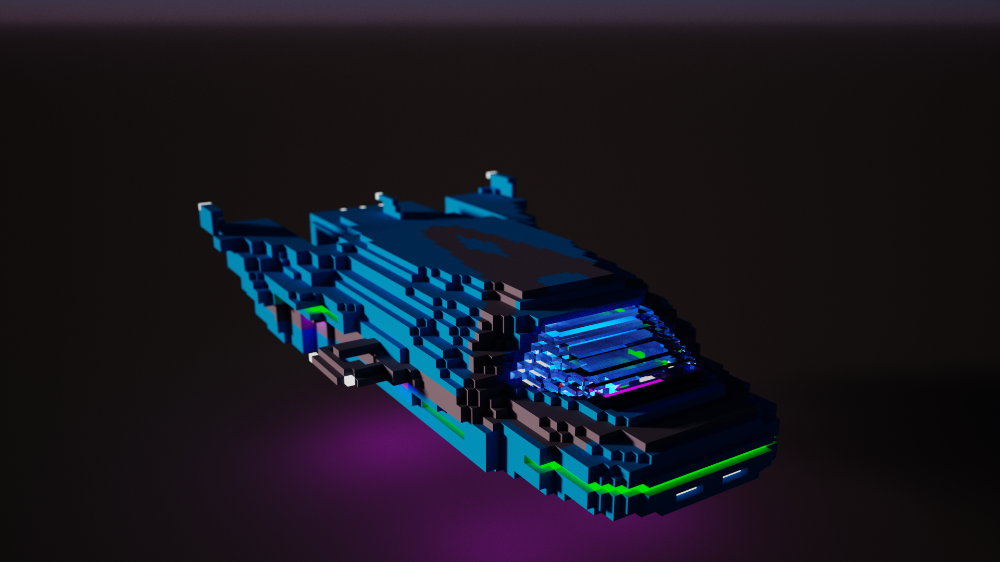
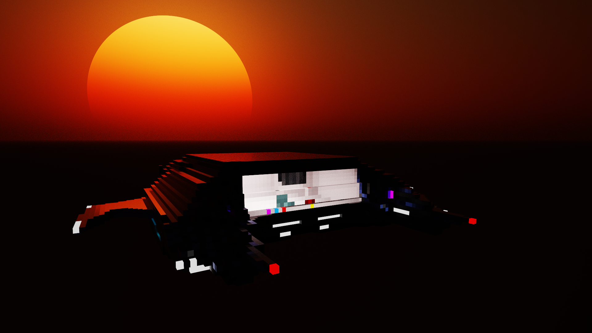
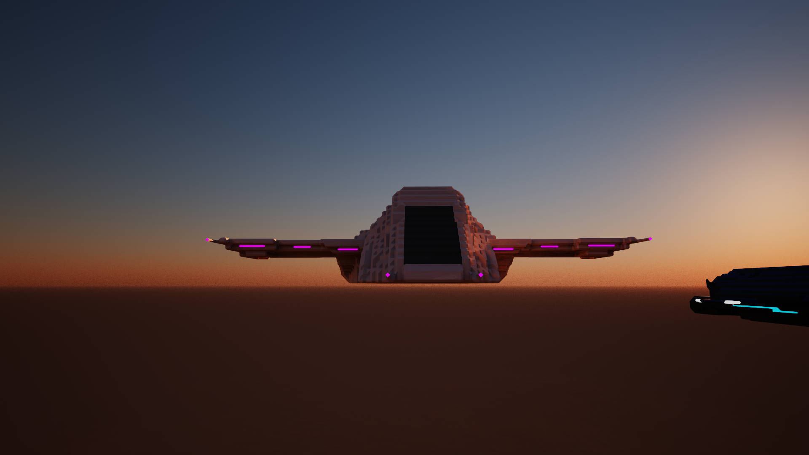

The following is a catalogue of spaceship bodies available in WPLTS. Click here to expand your vocabulary on spaceships. Note: These are only the bodies of spaceships. Thrusters, life support, navigation, and other components are not included. Go to the market to find some pre-built ships. More on building and managing your own ships here
All ships come with two low level thruster slots, two high level thruster slots, and eight guidance thruster slots unless otherwise specified.
Personal Use Spacecraft
FK-23
Stats
Class: A
Cost: 897000CR
Mass: 3900KG
ICC: 4.75 Units
FC: 12 Units
Maximum Occupancy: 12 individuals
Top LL Speed: 16.87 MPM
JAC: 2710CR
WC: 2W1B
Plating: 3.75 Units
HAT-46
Stats
Class: B
Cost: 324000CR
Mass: 5400KG
FC: 14 Units
ICC: 6.5 Units
Maximum Occupancy: 18 individuals
JAC: 6540CR
WC: 2FW
Plating: 5 Units
VX-92
Stats
Class: D
Cost: 468000CR
Mass: 4300KG
FC: 11 Units
ICC: 4 Units
Maximum Occupancy: 8 individuals
JAC: 4500CR
WC: 4W
Guidance Thrusters: 10
Low Level Thrusters: 4
Plating: 4.25 Units
PCF-97
Stats
Class: R
Cost: 233000CR
Mass: 8500
FC: 10 Units
ICC: 5 Units
Maximum Occupancy: 5 individuals
JAC: 2250CR
WC: 2FW
High Level Thrusters: 4
Plating: 5 Units
Cargo Ships
CG-12
Stats
Class: MC
Cost: 1850000CR
FT1: FT-U-LL
LLFC: 198 Units
MYPLLU: 200
FT2: FT-NPT-HL
HLFC: 240 Units
YPHLU: 2.97
ICC: 274 Units
Maximum Occupancy: Uncalculated
Top LL Speed: 20 MPM
Top HL Speed: 1.95 YPM
JAC: 32000CR (Also has a jump drive, allowing it to jump without authorization)
WC: O
Others
The Ordinance
This is heavy bomber is the crown jewel of the Divine Oligarchy bomber squadron; it boasts the Divine Oligarchy’s air power, equipped with 8 gunners, 2 squadrons of jets and or interstellar, small fighters, a 20 inch reinforced altamanium armor hull capable of withstanding most machine laser gun fire, and most anti tank plasma charges, only up to 60 liters of plasma or more per shell or cartridge can infiltrate the hull. It can deliver a payload of 200KG of TNT per bomb that is dropped.
It can devastate most air bases, but is extremely expensive to manufacture. If the Divine Oligarchy were to lose a handful of these, it would be a devastating loss.